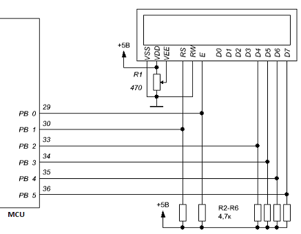

На примере STM32F407
void lcdDelay(void)
{
for(uint8_t i = 0; i < 255; ++i)
{}
}
void lcdInit(void)
{
//----------------------------------
// Start init
//----------------------------------
HAL_Delay(1000);
LCD_RS_CLR;
lcdDatClrSetE();
lcdSendNibble(0x30); //8 bit mode ON
HAL_Delay(5);
lcdSendNibble(0x30); //8 bit mode ON
HAL_Delay(1);
lcdSendNibble(0x30); //8 bit mode ON
HAL_Delay(1);
lcdSendNibble(0x20); //4 bit mode ON
HAL_Delay(1);
lcdSendCmnd(0x28); //4 bit mode ON, 2 lines
lcdSendCmnd(0x08); //display OFF
lcdSendCmnd(0x01); //clear display
lcdSendCmnd(0x06); //incr cursor position
HAL_Delay(1);
lcdSendCmnd(0x0C); //display ON without cursor
// lcdSendCmnd(0x0F); //display ON with cursor
HAL_Delay(1);
lcdSendCmnd(0x01); //clear display
}
void lcdSendNibble(const uint8_t cmnd)
{
// lcdDatClrSetE();
LCD_DAT_CLR;
LCD_E_SET;
lcdDelay();
if(cmnd & (1<<7)) LCD_D7_SET;
if(cmnd & (1<<6)) LCD_D6_SET;
if(cmnd & (1<<5)) LCD_D5_SET;
if(cmnd & (1<<4)) LCD_D4_SET;
lcdDelay();
LCD_E_CLR;
lcdDelay();
}
void lcdSendCmnd(const uint8_t cmnd)
{
lcdSendNibble(cmnd);
lcdSendNibble(cmnd<<4);
HAL_Delay(5);
}
void lcdSendCode(const uint8_t data)
{
LCD_RS_SET;
lcdSendCmnd(data);
LCD_RS_CLR;
}
void lcdSendData(const uint8_t data)
{
LCD_RS_SET;
lcdSendCmnd(data + LCD_ZERO); //+0x30
LCD_RS_CLR;
}
void lcdDatClrSetE(void)
{
LCD_DAT_CLR;
LCD_E_SET;
HAL_Delay(2);
}
#endif
Инициализируем по даташиту следующими короткими инструкциями (передаем только старший ниббл):
Далее идут полноценные инструкции по 8 бит без задержек:
Инициализация закончена, можно включать дисплей и передавать данные.
//lcd44780.h
#ifndef __LCD44780_H__
#define __LCD44780_H__
//---LCD------------------------------------
#define LCD_SYSPORT GPIOB
#define LCD_RS GPIO_PIN_9
#define LCD_E GPIO_PIN_8
#define LCD_DATPORT GPIOD
#define LCD_D7 GPIO_PIN_7
#define LCD_D6 GPIO_PIN_6
#define LCD_D5 GPIO_PIN_3 //!!! PIN 3 !!!, not 5
#define LCD_D4 GPIO_PIN_4
#define LCD_RS_SET HAL_GPIO_WritePin(LCD_SYSPORT, LCD_RS, GPIO_PIN_SET)
#define LCD_RS_CLR HAL_GPIO_WritePin(LCD_SYSPORT, LCD_RS, GPIO_PIN_RESET)
#define LCD_E_SET HAL_GPIO_WritePin(LCD_SYSPORT, LCD_E, GPIO_PIN_SET)
#define LCD_E_CLR HAL_GPIO_WritePin(LCD_SYSPORT, LCD_E, GPIO_PIN_RESET)
#define LCD_D7_SET HAL_GPIO_WritePin(LCD_DATPORT, LCD_D7, GPIO_PIN_SET)
#define LCD_D7_CLR HAL_GPIO_WritePin(LCD_DATPORT, LCD_D7, GPIO_PIN_RESET)
#define LCD_D6_SET HAL_GPIO_WritePin(LCD_DATPORT, LCD_D6, GPIO_PIN_SET)
#define LCD_D6_CLR HAL_GPIO_WritePin(LCD_DATPORT, LCD_D6, GPIO_PIN_RESET)
#define LCD_D5_SET HAL_GPIO_WritePin(LCD_DATPORT, LCD_D5, GPIO_PIN_SET)
#define LCD_D5_CLR HAL_GPIO_WritePin(LCD_DATPORT, LCD_D5, GPIO_PIN_RESET)
#define LCD_D4_SET HAL_GPIO_WritePin(LCD_DATPORT, LCD_D4, GPIO_PIN_SET)
#define LCD_D4_CLR HAL_GPIO_WritePin(LCD_DATPORT, LCD_D4, GPIO_PIN_RESET)
#define LCD_DAT_CLR HAL_GPIO_WritePin(LCD_DATPORT, LCD_D4|LCD_D5|LCD_D6|LCD_D7, GPIO_PIN_RESET)
//positions
#define LCD_HOME 0x02
#define LCD_MONTH_POS 0x83
#define LCD_YEAR_POS 0x86
#define LCD_SECOND_LINE 0xC0
#define LCD_MIN_POS 0xC3
#define LCD_SEC_POS 0xC6
//commands
#define LCD_ON 0x0C
#define LCD_OFF 0x08
//symbols
#define LCD_ZERO 0x30
#define LCD_DOTS 0x0A
#define LCD_POINT 0x2E
void lcdInit(void);
void lcdSendCmnd(const uint8_t cmnd);
void lcdSendNibble(const uint8_t cmnd);
void lcdSendCode(const uint8_t data);
void lcdSendData(const uint8_t data);
void lcdDatClrSetE(void);
#endif
//main.c
lcdInit();
lcdSendCmnd(0x01);
lcdSendCmnd(0x02);
while (1)
{
lcdSendCmnd(0x01); //clear screen
lcdSendCmnd(0x02); //cursor home
for(uint8_t i = 0; i < 33; ++i)
{
if(i == 17)
{lcdSendCmnd(LCD_SECOND_LINE);}
lcdSendData(i);
}
}